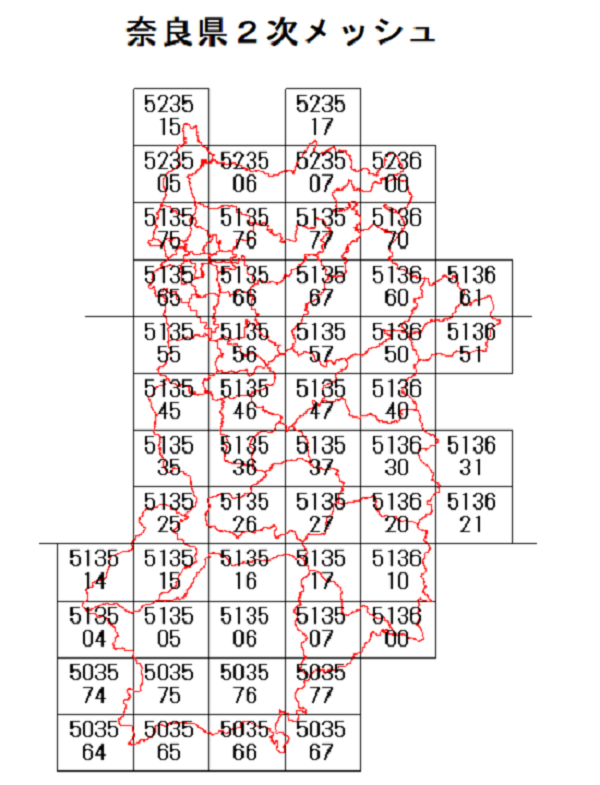

植生マップは植物群落の分布を示した地図であり、環境省生物多様性センター（http://www.biodic.go.jp/）からGISに加工しやすいデータとして提供されているので、
奈良県の植生情報を地理院地図上に２次メッシュ（10km×10km）ごと示します。皆さんの住んでいるところや気になる場所の植生状況を確認してみてください。
下の２次メッシュ番号をクリックすると見れます。

| 植 生 区 分 | 植生図 の色 |
面積 (km2) |
植 生 大 区 分 [面積, km2] |
| コケモモ－トウヒクラス域自然植生 | 10 | 亜高山帯針葉樹林[9.7]、亜高山帯広葉樹林[0.02] | |
| ブナクラス域 自然植生 |
234 | 落葉広葉樹林[144]、冷温帯針葉樹林[87]、岩角地針葉樹林[0.6]、渓畔林[2]、岩角地・風衝地低木群落[0.1]、自然草原[0.02] | |
| ブナクラス域 代償植生 |
494 | 落葉広葉樹二次林[445]、常緑針葉樹二次林[32]、二次草原[7]、伐採跡地群落[10] | |
| ヤブツバキクラス域 自然植生 |
87 | 常緑広葉樹林[13]、暖温帯針葉樹林[48]、岩角地・海岸断崖地針葉樹林[12]、落葉広葉樹林[13]、沼沢林[0.1]、河辺林[1] | |
| ヤブツバキクラス域 代償植生 |
1,023 | 常緑広葉樹二次林[283]、落葉広葉樹二次林[490]、常緑針葉樹二次林[200]、タケ・ササ群落[0.1]、低木群落[8]、二次草原[5]、伐採跡地群落[38] | |
| 河辺・湿原・沼沢地・砂丘植生 | 5 | 湿原・河川・池沼植生[5]、岩角地・石灰岩地・蛇紋岩地植生[0.3] | |
| 植林地・耕作地植生 | 3,099 | 植林地[2527]、竹林[41]、牧草地・ゴルフ場・芝地[40]、耕作地[492] | |
| その他 | 577 | 市街地等[577] |